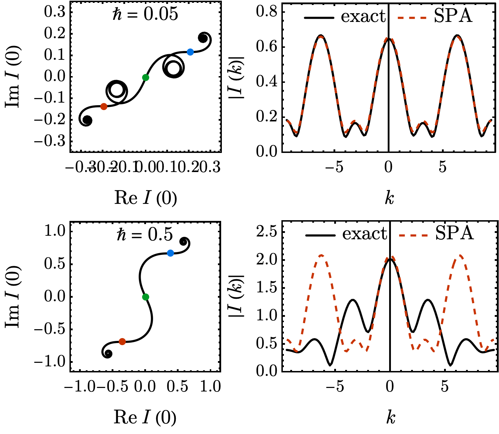

3.3.1 Stationary Phase Approximation#
Prompts
What is the stationary-phase approximation, and when does it apply to oscillatory integrals \(\int A(x)\,\mathrm{e}^{\mathrm{i}S(x)/\hbar}\mathrm{d}x\)?
Why does the classical path (\(\delta S = 0\)) dominate the path integral as \(\hbar\to 0\), just as ordinary saddles dominate ordinary integrals?
How do Gaussian fluctuations around the classical path produce the semiclassical prefactor \(1/\sqrt{\det\hat{D}}\)?
How does applying SPA to the path integral produce a semiclassical propagator with phase \(S_\mathrm{cl}/\hbar\) and a Gaussian fluctuation prefactor?
How does stationary phase make the correspondence principle precise — classical mechanics as the \(S_\mathrm{cl}/\hbar\to\infty\) limit of quantum mechanics?
Lecture Notes#
Overview#
Path-integral interference selects classical paths through stationarity of the action. To make this precise, we first develop the stationary-phase approximation (SPA) for ordinary 1D integrals — using exactly the symbols \(S\) and \(A\) that appear in the path integral, so the analogy is transparent. We then promote SPA from saddles in \(x\) to classical paths in the path integral, obtain the semiclassical propagator with its Gaussian fluctuation prefactor, and use \(S_\mathrm{cl}/\hbar\) to state the correspondence principle.
The Stationary-Phase Formula#
Many quantum-mechanical calculations reduce to an oscillatory 1D integral of the form
with \(S(x)\) a real “action-like” phase function and \(A(x)\) a slowly varying amplitude. (Calling the phase function \(S\) — not a separate symbol like \(\Phi\) — is intentional: the path integral has the same form, only with \(x\) replaced by an entire path.) When \(\hbar\) is small, the phase \(S(x)/\hbar\) oscillates rapidly and contributions cancel everywhere except near points where the phase is stationary, \(S'(x_{0}) = 0\).
Stationary-phase approximation
For an isolated stationary point \(x_{0}\) where \(S'(x_{0}) = 0\), the leading contribution as \(\hbar\to 0\) is
with the principal-branch square root: \(\sqrt{2\pi\mathrm{i}\hbar/S''} = \sqrt{2\pi\hbar/\vert S''\vert}\,\mathrm{e}^{\mathrm{i}\pi/4\,\mathrm{sgn}(S'')}\). For multiple isolated saddles, sum their contributions.
Validity: each saddle is isolated, \(A\) varies slowly compared with \(\mathrm{e}^{\mathrm{i}S/\hbar}\), and \(\vert S''(x_{0})\vert\ne 0\).
Derivation: SPA from a Taylor expansion
Near \(x_{0}\), expand \(S(x) \approx S(x_{0}) + \tfrac{1}{2}S''(x_{0})(x - x_{0})^{2}\) — the linear term vanishes by stationarity. Replace the slowly varying \(A(x)\) by \(A(x_{0})\). The integral becomes Gaussian:
Use the Fresnel integral \(\int_{-\infty}^{\infty}\mathrm{e}^{\mathrm{i}\alpha y^{2}}\,\mathrm{d}y = \sqrt{\mathrm{i}\pi/\alpha}\) (for real \(\alpha\neq 0\), with \(\sqrt{\mathrm{i}} = \mathrm{e}^{\mathrm{i}\pi/4}\)) at \(\alpha = S''(x_{0})/(2\hbar)\) to get \(\sqrt{2\pi\mathrm{i}\hbar/S''(x_{0})}\), completing (94).
The width of the contributing region around \(x_{0}\) is \(\Delta x \sim \sqrt{\hbar/\vert S''(x_{0})\vert}\) — it shrinks to zero as \(\hbar\to 0\), leaving only the saddle.
Worked Example: A Mexican-Hat Action#
To see SPA in action — and to see when it breaks down — consider the Mexican-hat phase
so the SPA integral is the Fourier transform of \(\mathrm{e}^{\mathrm{i}S(x)/\hbar}\) at wavevector \(k\):
The saddles are \(S'(x_{0}) = 4x_{0}(x_{0}^{2} - 1) = 0\), giving three points: \(x_{0} = -1, 0, +1\), with \(S(\pm 1) = 0\), \(S(0) = 1\), \(S''(\pm 1) = 8\), \(S''(0) = -4\) (Fig. 14). Applying (94) to each and summing,
The SPA result is a sum of three plane waves \(\mathrm{e}^{\mathrm{i}kx_{0}}\), one per saddle. Inverse-Fourier-transforming back to position space yields three delta peaks located precisely at \(x_{0} = -1, 0, +1\) — the SPA literally reads off the saddle positions from the \(k\)-space oscillation pattern.
{kind=link}

Fig. 15 For each value of \(\hbar\) (top: \(\hbar = 0.05\); bottom: \(\hbar = 0.5\)). Left column: the running integral \(\int_{0}^{x}\mathrm{e}^{\mathrm{i}S(x')/\hbar}\,\mathrm{d}x'\) traced in the complex plane. The walker accumulates length only where the phase is stationary — at small \(\hbar\) each saddle (red, green, blue dots) appears as a spiral burst, while between saddles the path stalls. The total integral \(I(k=0)\) is the vector from start to end. Right column: \(\vert I(k)\vert\) — exact numerical (black) versus the SPA prediction (red, dashed). At small \(\hbar\), SPA is essentially indistinguishable from exact. At larger \(\hbar\), the saddles’ contributing widths \(\Delta x\sim\sqrt{\hbar/\vert S''\vert}\) overlap and SPA degrades.#
Two lessons from this example:
SPA picks out saddles. The complex-plane traces in Fig. 15 (left column) make the geometric meaning of “rapid-oscillation cancellation” concrete: the integral spirals only where the phase is stationary; everywhere else it stalls. The SPA sum (97) is exactly the analytic prediction for these jumps.
SPA breaks down when saddles overlap. The contributing width around each saddle is \(\sqrt{\hbar/\vert S''\vert}\). When \(\hbar\) becomes large enough that adjacent saddles’ contributing regions overlap (compare the saddle separation \(\sim 1\) here with \(\sqrt{\hbar/\vert S''\vert}\sim\sqrt{\hbar/4}\)), neighbouring saddles cease to be isolated and SPA fails (Fig. 15, lower-right).
From Saddles in \(x\) to Classical Paths#
Promote the SPA from an ordinary integral to a path integral. Writing the propagator schematically as
the configurations are no longer real numbers \(x\) but full paths \(x(t)\). Stationarity becomes the functional condition \(\delta S[x]/\delta x(t) = 0\), which is the Euler-Lagrange (Newton’s) equation — the saddles are the classical paths \(x_\mathrm{cl}(t)\). The structural translation is exact:
Ordinary SPA |
Path-integral SPA |
|---|---|
Configuration: \(x \in \mathbb{R}\) |
Configuration: path \(x(t)\) |
Stationary point: \(S'(x_{0}) = 0\) |
Stationary path: \(\delta S/\delta x = 0\) (classical path \(x_\mathrm{cl}(t)\)) |
Quadratic expansion: \(S(x_{0}) + \tfrac{1}{2}S''(x_{0})(x-x_{0})^{2}\) |
Quadratic expansion: \(S_\mathrm{cl} + \tfrac{1}{2}\!\int\delta x\,\hat{D}\,\delta x\,\mathrm{d}t\) |
Gaussian width: \(\sqrt{\hbar/\vert S''\vert}\) |
Gaussian width: \(\sqrt{\hbar/\vert\hat{D}\vert}\) in path space |
Result: \(A(x_{0})\sqrt{2\pi\mathrm{i}\hbar/S''}\,\mathrm{e}^{\mathrm{i}S(x_{0})/\hbar}\) |
Result: \((\det\hat{D})^{-1/2}\,\mathrm{e}^{\mathrm{i}S_\mathrm{cl}/\hbar}\) |
Nearby paths have nearly equal action and add coherently around \(x_\mathrm{cl}(t)\); far-from-classical paths cancel. As \(\hbar\to 0\), only an infinitesimally thin tube of paths around \(x_\mathrm{cl}\) contributes — classical mechanics emerges from the path integral.
Quantum Fluctuations: The Semiclassical Propagator#
Expand the action to second order around the classical path,
with the second-variation operator \(\hat{D} = -m\,\mathrm{d}^{2}/\mathrm{d}t^{2} - V''(x_\mathrm{cl})\) (1D for clarity). The Gaussian path integral over the fluctuation \(\delta x(t)\) — which vanishes at the endpoints — gives
Semiclassical propagator
The phase comes from the classical action; the \(1/\sqrt{\det\hat{D}}\) prefactor encodes Gaussian quantum fluctuations around the classical path.
Correspondence Principle#
The ratio \(S_\mathrm{cl}/\hbar\) controls the quantum-to-classical crossover:
Regime |
\(S_\mathrm{cl}/\hbar\) |
Behavior |
|---|---|---|
Classical |
\(\gg 1\) |
Single saddle dominates; definite trajectory |
Semiclassical |
\(\sim 1\) |
Saddle path + Gaussian quantum corrections |
Quantum |
\(\lesssim 1\) |
All paths contribute; full wave behavior |
Example: electron vs baseball
Problem. Compare \(S_\mathrm{cl}/\hbar\) for an electron moving \(1\,\mathrm{cm}\) in \(1\,\mathrm{s}\) versus a baseball (\(0.1\,\mathrm{kg}\)) moving \(1\,\mathrm{m}\) in \(1\,\mathrm{s}\).
Solution. \(S_\mathrm{cl}\sim md^{2}/t\). Electron: \(S\sim 10^{-30}\cdot 10^{-4}/1 = 10^{-34}\,\mathrm{J\,s}\sim\hbar\) — quantum regime, all paths matter. Baseball: \(S\sim 0.1\cdot 1/1 = 0.1\,\mathrm{J\,s}\sim 10^{33}\hbar\) — classical regime, single saddle dominates.
Poll: stationary phase and the classical limit
In the path integral \(\int\mathcal{D}[x]\,\mathrm{e}^{\mathrm{i}S[x]/\hbar}\), paths far from a stationary point of \(S\) have rapidly varying phases that cancel. Why does this become more selective as \(\hbar\to 0\)?
(A) The phase \(S/\hbar\) becomes large everywhere except at saddles, so neighboring paths oscillate more rapidly and cancel more sharply.
(B) The classical path minimizes the action, so nearby paths share its action exactly.
(C) Only paths with integer action \(S/\hbar = n\) contribute; the spacing tightens as \(\hbar\to 0\).
(D) The SPA fails as \(\hbar\to 0\); the classical limit must be imposed by hand.
Summary#
Stationary-phase approximation (94): oscillatory integrals \(\int A(x)\,\mathrm{e}^{\mathrm{i}S(x)/\hbar}\,\mathrm{d}x\) are dominated by points where \(S'(x_{0}) = 0\). The contributing region has width \(\sqrt{\hbar/\vert S''(x_{0})\vert}\).
Worked example (Fig. 15): for \(S(x) = (x^{2}-1)^{2}\) and \(A(x) = \mathrm{e}^{\mathrm{i}kx}\), SPA gives a sum of three plane waves whose Fourier inverse pinpoints the saddle locations \(x_{0} = -1, 0, +1\). Agreement with the exact \(I(k)\) is essentially perfect at small \(\hbar\) and degrades when adjacent saddles overlap at larger \(\hbar\).
Promoted to path integrals: saddles in \(x\) become classical paths (\(\delta S/\delta x = 0\)); the same argument selects \(x_\mathrm{cl}(t)\) from \(\int\mathcal{D}[x]\).
Semiclassical propagator (99): \(K \approx \mathrm{e}^{\mathrm{i}S_\mathrm{cl}/\hbar}/\sqrt{\det\hat{D}}\), with Gaussian fluctuations encoded in \(\hat{D}\).
Correspondence principle: classical mechanics is the \(S_\mathrm{cl}/\hbar\to\infty\) limit of SPA.
Homework#
1. Gaussian check. Apply the stationary-phase approximation to the pure Gaussian integral \(I = \int_{-\infty}^{\infty}\mathrm{e}^{\mathrm{i}\alpha x^{2}/\hbar}\,\mathrm{d}x\) with \(\alpha > 0\) real.
(a) Find the stationary point \(x_{0}\) where \(S'(x_{0}) = 0\) for \(S(x) = \alpha x^{2}\).
(b) Evaluate the SPA formula (94) and compare with the exact Fresnel result \(\sqrt{\pi\hbar/(-\mathrm{i}\alpha)} = \sqrt{\pi\hbar/\alpha}\,\mathrm{e}^{\mathrm{i}\pi/4}\). Show that SPA is exact here. Why?
2. Cubic phase. Consider \(I = \int_{-\infty}^{\infty}\mathrm{e}^{\mathrm{i}(x^{2} + \epsilon x^{3})/\hbar}\,\mathrm{d}x\) with \(\epsilon\) small and positive.
(a) Find all stationary points of \(S(x) = x^{2} + \epsilon x^{3}\).
(b) For the stationary point near \(x = 0\), apply the SPA formula and write the leading approximation to \(I\).
(c) Explain why the other stationary point (at \(x = -2/(3\epsilon)\)) gives a subdominant contribution when \(\epsilon\) is small.
3. Stationary-region width. The SPA integral receives its dominant contribution from a region of width \(\Delta x\) around each stationary point.
(a) Using \(\vert S''(x_{0})\vert(x - x_{0})^{2}/(2\hbar)\sim 1\) as the criterion for significant phase variation, show \(\Delta x \sim \sqrt{\hbar/\vert S''(x_{0})\vert}\).
(b) For the free-particle classical action \(S_\text{cl} = m(\Delta x)^{2}/(2t)\), identify \(S'' = m/t\) and estimate \(\Delta x\) in position space. How does it scale with \(m\) and \(t\)?
(c) Evaluate this width for an electron (\(m \approx 10^{-30}\,\text{kg}\), \(t = 10^{-15}\,\text{s}\)) and a baseball (\(m = 0.15\,\text{kg}\), \(t = 1\,\text{s}\)). Why is the baseball’s quantum uncertainty negligible?
4. Second variation. For a particle in a potential \(V(x)\), the second variation of the action around the classical path is \(\delta^{2}S = \int_{0}^{T}\delta x(t)\,\hat{D}\,\delta x(t)\,\mathrm{d}t\) with \(\hat{D} = -m\,\mathrm{d}^{2}/\mathrm{d}t^{2} - V''(x_\mathrm{cl})\).
(a) For the harmonic oscillator \(V = \tfrac{1}{2}m\omega^{2}x^{2}\), show that \(\hat{D} = -m(\mathrm{d}^{2}/\mathrm{d}t^{2} + \omega^{2})\).
(b) Fluctuations \(\delta x(t)\) vanish at the endpoints (paths have fixed boundary conditions), so \(\hat{D}\,\delta x = \lambda\,\delta x\) has Dirichlet boundary conditions \(\delta x(0) = \delta x(T) = 0\), with eigenfunctions \(\sin(n\pi t/T)\) for \(n = 1, 2, \ldots\). Find the eigenvalues, identify the values of \(T\) at which a zero eigenvalue appears, and explain what goes wrong with the semiclassical propagator at those special times.
5. Validity breakdown. Apply the SPA naively to \(I = \int_{-\infty}^{\infty}\mathrm{e}^{\mathrm{i}x^{4}/\hbar}\,\mathrm{d}x\).
(a) Find the stationary points of \(S(x) = x^{4}\) and compute \(S''\) at each.
(b) Why does the SPA formula (94) fail here? Which condition of the standard SPA is violated?
(c) The correct leading behaviour is \(I \sim \hbar^{1/4}\), not \(\hbar^{1/2}\). Argue on dimensional grounds why a degenerate stationary point (\(S'' = 0\) but \(S^{(4)}\neq 0\)) changes the \(\hbar\)-scaling.
6. Mexican-hat saddles. For the example (95)–(96) with \(S(x) = (x^{2}-1)^{2}\) and \(A(x) = \mathrm{e}^{\mathrm{i}kx}\):
(a) Verify that \(S'(x_{0}) = 0\) has the three solutions \(x_{0} = -1, 0, +1\) and compute \(S(x_{0})\) and \(S''(x_{0})\) at each.
(b) Apply (94) to write down \(I_{\mathrm{SPA}}(k)\) as a sum of three plane waves in \(k\).
(c) Compute the inverse Fourier transform \(\tilde{I}(x) = (1/2\pi)\int I_{\mathrm{SPA}}(k)\,\mathrm{e}^{-\mathrm{i}kx}\,\mathrm{d}k\). Show that it is a sum of three delta peaks at the saddle positions, with relative weights set by \(1/\sqrt{\vert S''(x_{0})\vert}\).
(d) From the criterion \(\sqrt{\hbar/\vert S''\vert}\ll\) saddle separation, estimate the value of \(\hbar\) at which adjacent saddles begin to overlap and SPA breaks down. Compare with Fig. 15.
7. Free particle from SPA. The free-particle action \(S[x] = \int_{0}^{t}\tfrac{1}{2}m\dot{x}^{2}\,\mathrm{d}\tau\) is purely quadratic in the path, so SPA applied to the path integral is exact.
(a) Compute the classical action \(S_\text{cl}(x,t;x_{0},0) = m(x - x_{0})^{2}/(2t)\) along the straight-line trajectory.
(b) Compute the mixed derivative \(-\partial^{2}S_\text{cl}/(\partial x\,\partial x_{0})\) and show it equals \(m/t\).
(c) The semiclassical propagator from a quadratic action is \(K \approx \sqrt{-\partial^{2}S_\text{cl}/(\partial x\,\partial x_{0})/(2\pi\mathrm{i}\hbar)}\,\exp(\mathrm{i}S_\text{cl}/\hbar)\) (the Van Vleck formula — the SPA result for a path integral with quadratic action). Verify that this reproduces the exact free propagator from §3.2.3.
8. Correspondence principle. The ratio \(S_\text{cl}/\hbar\) controls whether a system is quantum or classical.
(a) For a free particle of mass \(m\) traversing distance \(d\) in time \(t\), \(S_\text{cl} = md^{2}/(2t)\). Compute \(S_\text{cl}/\hbar\) for an electron (\(m\approx 10^{-30}\,\text{kg}\)) moving \(1\,\text{nm}\) in \(1\,\text{ns}\), and for a ball (\(m = 0.1\,\text{kg}\)) moving \(1\,\text{m}\) in \(1\,\text{s}\).
(b) For the ball, the SPA selects one dominant path. Estimate the number of \(2\pi\) phase oscillations as the endpoint \(x\) varies over \(1\,\text{mm}\). Why does this make the propagator effectively a delta function on macroscopic scales?
(c) Explain how this quantitative argument embodies the correspondence principle: classical mechanics emerges from quantum mechanics when \(S_\text{cl}\gg\hbar\).